L02: Traditional Methods for ML in Graphs
Contents
L02: Traditional Methods for ML in Graphs¶
Introduction¶
Node level prediction
Example - user level prediction
Link/Edge level prediction
Example - pair is connected or not
Graph level prediction
Example - for an entire molecule
Traditional ML Pipeline¶
We design features for nodes/links/graphs which have dimension \(\in \mathbb R^{D}\)
design 2 types of features
assume nodes have some types of attributes attached to the node
create additional local network topology
goal is to design
structural features and
features describing attributes and properties
Focus on structural features
that describes surrounding of links
as well as structure of entire graph
In traditional ML pipeline:
step one
take data points nodes, links and entire graphs
represent with vector of features
train using ML model
in future, apply this model given a new node/link/graph and make prediction
we train ML model (hand-designed features)
by applying Random Forest, SVM, NN
and then apply model to make predictions
In this lecture/here (use undirected graphs for simplicity):
Node level prediction
Link level prediction
Graph level prediction
ML in graphs¶
Goal: Make predictions for set of objects
Design choices:
Features: d-dimensional vector
Objects: nodes, edges, sets of nodes, entire graphs
Objective function:
Given: \(G = (V, E)\)
Learn: \(f: V \rightarrow \mathbb R\)
How do we learn the function.
Node-level features¶
Node classification
Identify missing node colors, given other node colors
Goal: Characterize structure and position of node in network
Node degree
Node centrality
Clustering coefficient
Graphlets
Node Degree¶
Degree
number of edges a node has
neighboring nodes
treat all neighboring nodes equally
does not capture importance
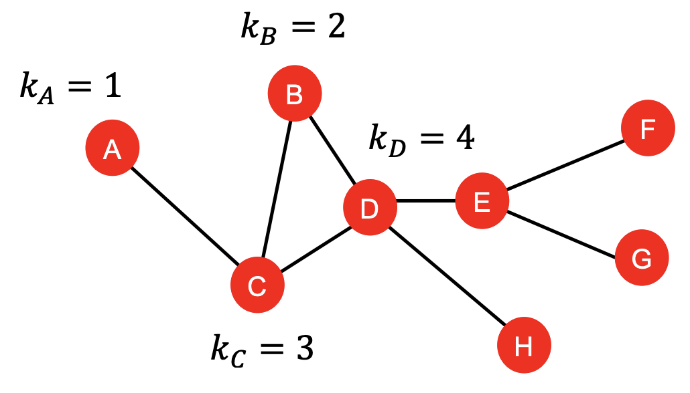
\(\tiny{\text{YouTube-Stanford-CS224W-Jure Leskovec}}\)
Node centrality¶
captures the node importance in a graph
Eigenvector centrality¶
node is imp if it has more important neighboring nodes
sum of centrality of neighboring nodes
recursive problem $\( c_{\nu} = \frac{1}{\lambda}\sum\limits_{u \in N(\nu)}c_{u} \Leftrightarrow \lambda c = A c \)$
where A is the adjacency matrix
c is the centrality vector
\(\lambda\) is positive constant
centrality is the eigenvector
largest eigenvalue is always positive (Perron-Frobenius theorem)
leading eigenvector \(c_{max}\) is used for centrality
it is not about how many connections you have, but who these connections point to and how important are those connections
Betweenness centrality¶
node is imp if it lies on many shortest paths between other nodes
the more short nodes a node appears on, the more important it is
how many paths pass through C here
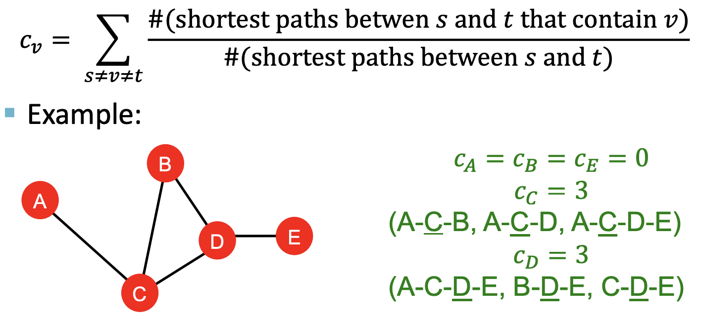
\(\tiny{\text{YouTube-Stanford-CS224W-Jure Leskovec}}\)
Closeness centrality¶
node is imp if it has small shortest path lengths to all other nodes
the more in the center you are, the smaller will be the sum
D lies more in the center of the network compared to A
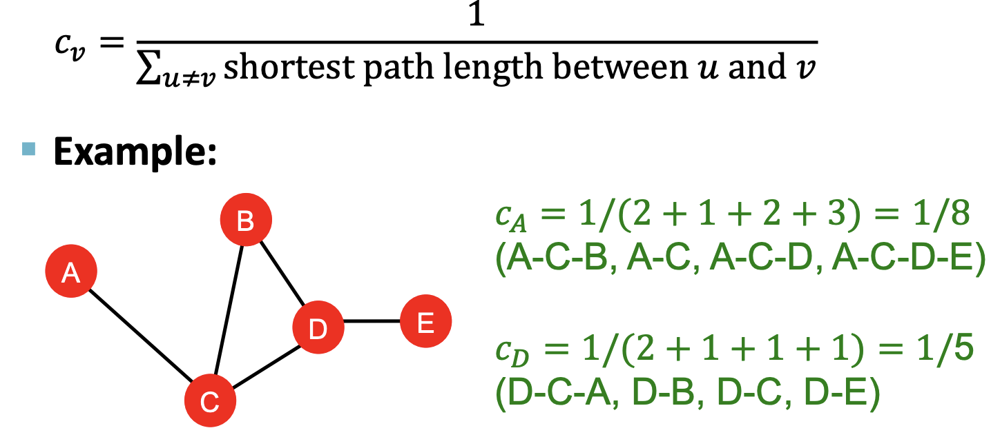
\(\tiny{\text{YouTube-Stanford-CS224W-Jure Leskovec}}\)
Clustering coefficient¶
how connected nodes are corresponding to its neighboring nodes
denominator
how many potential nodes are there in neighborhood
numerator
how many edges actually occur
range is 0 to 1
0 means none of your friend know each other and are not connected to each other
1 means each of your friend know each other and are all connected to each other
no of triangles is used to calculate coefficient
in the middle example below, there are 6 triangle possible(4c2), out of which the v node forms 3 connection triangle to all, so the coeff is 0.5
3 triangles out of 6 node triplets
important in social network
friend of my friend, is my friend
triangle closing
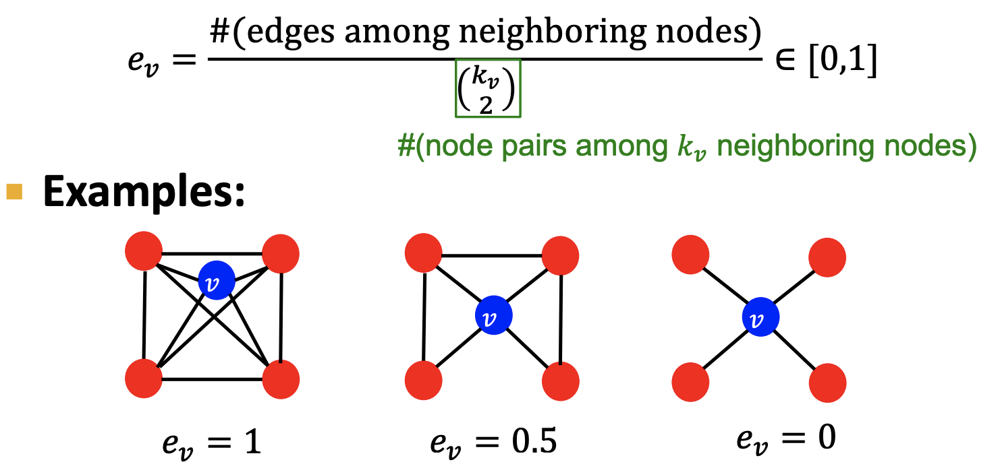
\(\tiny{\text{YouTube-Stanford-CS224W-Jure Leskovec}}\)
Graphlets¶
this is an extension of clustering coeff
instead of counting triangles, this counts the pre-specified subgraphs - graphlets
topology of node’s neighborhood
gives a measure of topological similarity compared to node degrees or clustering coefficient
Graphlets are rooted connected non-isomorphic subgraphs
in 3-node graphlets
either it is a chain of 3 nodes with two on edge and one not on edge \(G_1\)
or it is a triangle formed using 3 nodes \(G_2\)
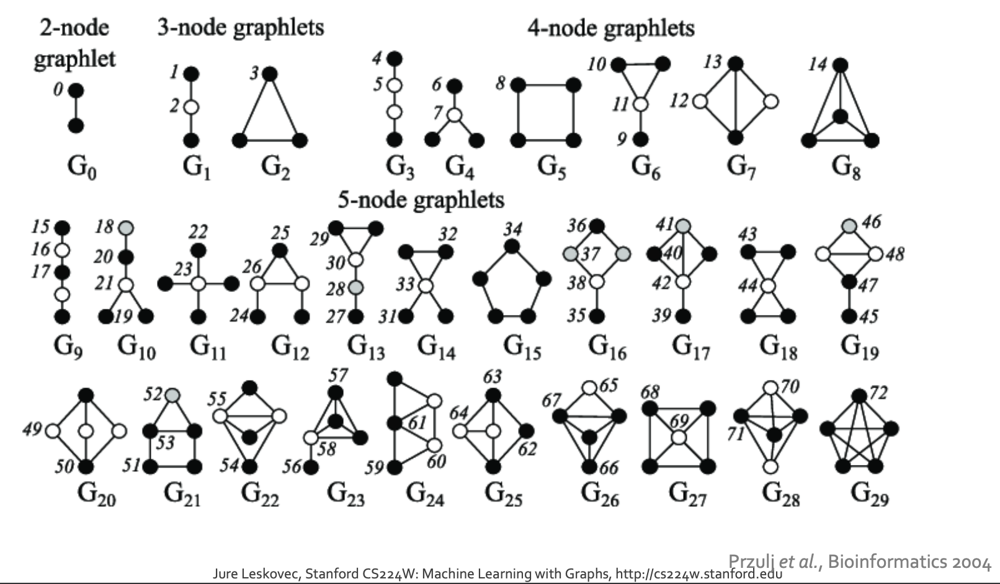
\(\tiny{\text{YouTube-Stanford-CS224W-Jure Leskovec}}\)
Graphlet Degree Vector (GDV)
graphlet based features for nodes
Degree
count of edges that a node touches
Clustering Coefficient
count of triangles that a node touches
GDV
count of graphlets that a node touches/participates in
in example below: GDV of node \(\nu\) is \([2,1,0,2] \)
this characterizes local neighborhood structure around given node of interest based on the frequency of graphlets this node participates in
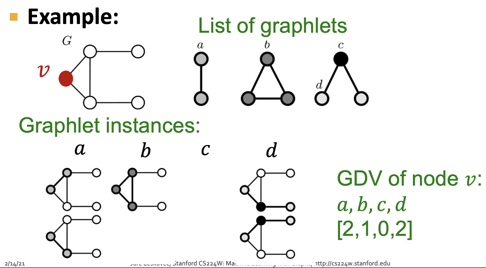
a graphlet of 5 nodes will have
vector of 73 coordinates that describes the topology of node’s neighborhood
captures its inter-connectivity within distance of 4 hops
provides a detailed representation of local topological similarity/structure compared to other node features
Summary - Node level feature¶
Importance based features
Node degree
count neighboring nodes
Node centrality
based on choice of centrality measure
Example
predict celebrity users in social network
Structure based features
capture topological properties of local neighborhood around node
Node degree
clustering coeff
Graphlet degree vector(GDV)
Example
used in protein-protein interaction
node features help distinguish nodes
but donot allow distinguish node labels
Link prediction task and features¶
predict new links based on existing links
initially at test time,
all node pairs (including ones not linked) are ranked and
top K node pairs are predicted
this link prediction can be done in 2 ways
links missing at random
links over time
goal: design features for a pair of nodes
concatenate nodes and train models
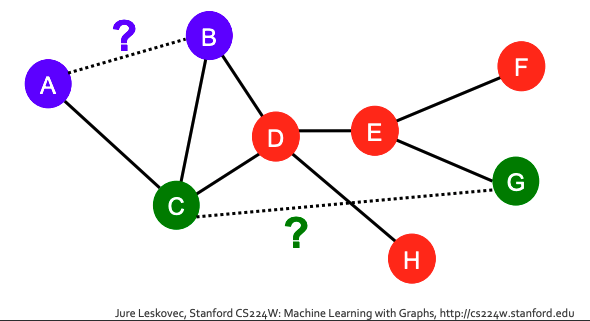
links missing at random
remove random sets of links
aim to predict them using training algorithm
links over time
predict evolution of networks for example citation network or social network
observe patterns between time \((t_0, t_0^{'})\) and
then predict based on this pattern for future time \((t_1, t_1^{'})\)
Methodology - Proximity score
how to decide on the feature descriptor for any given node
compute score \(c(x,y)\) for each node pair \((x,y)\)
score can be of common neighbors between x and y
sort pairs \((x,y)\) by decreasing score \(c(x,y)\)
predict top n pairs as new pairs
compare the predicted to actual and see how good the prediction was
Link level features¶
goal: describe the relationship so as to predict and learn if there exists link between them
types:
Distance based feature
uses shortest path between two nodes
but does not capture neighborhood overlaps
Local neighborhood overlap
how many nodes does a pair have in common
but nodes that have no nodes in common(are more than 2 hops apart), metric will return value 0
Overlap/Global neighborhood overlap
uses global graph structure to give score for pair of nodes
Distance based feature¶
shortest path distance between two nodes
does not capture degree of neighborhood overlap or strength of connection
\((B,H)\) have 2 friends in common\((B,C,H), (B,D,H)\), so is stronger connection
\((D,F)\) have 1 friend in common\((D,E,F)\), so is relatively weaker connection
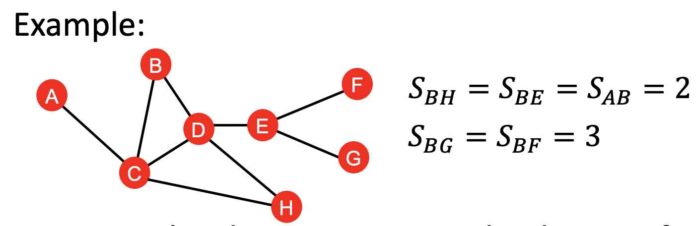
\(\tiny{\text{YouTube-Stanford-CS224W-Jure Leskovec}}\)
Local Neighborhood overlap¶
number of neighborhood shared between 2 nodes
common neighbors
pros: nodes that have higher degree are more likely to have neighbors with others
jaccard coefficient
pros: normalize effect
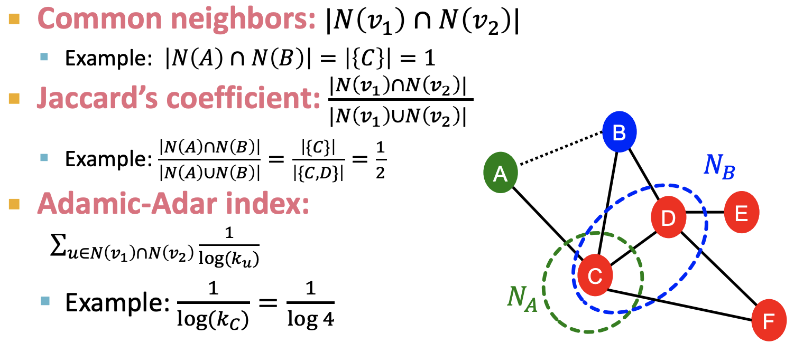
\(\tiny{\text{YouTube-Stanford-CS224W-Jure Leskovec}}\)
Global Neighborhood overlap¶
Katz index - number of paths of all length between pair of nodes
to compute paths between 2 nodes
use powers of adjacency matrix
can compute path between path of any given length l between u and v node - \(A_{uv}^{l}\)
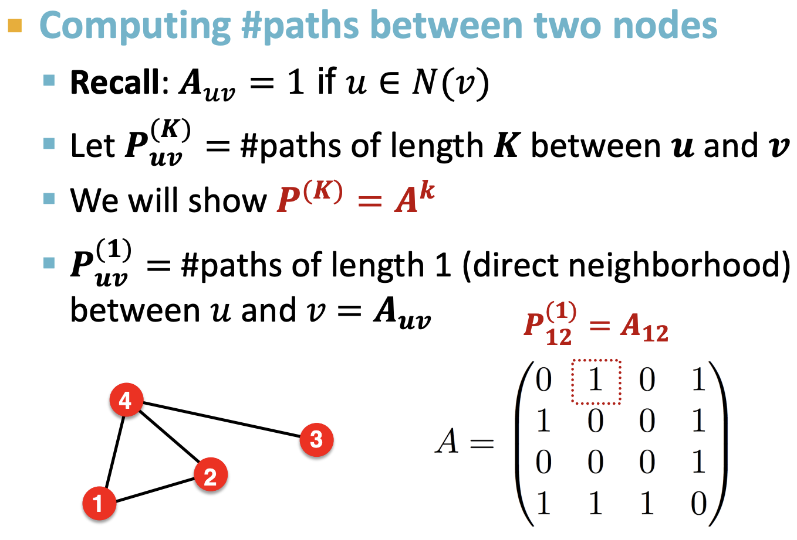
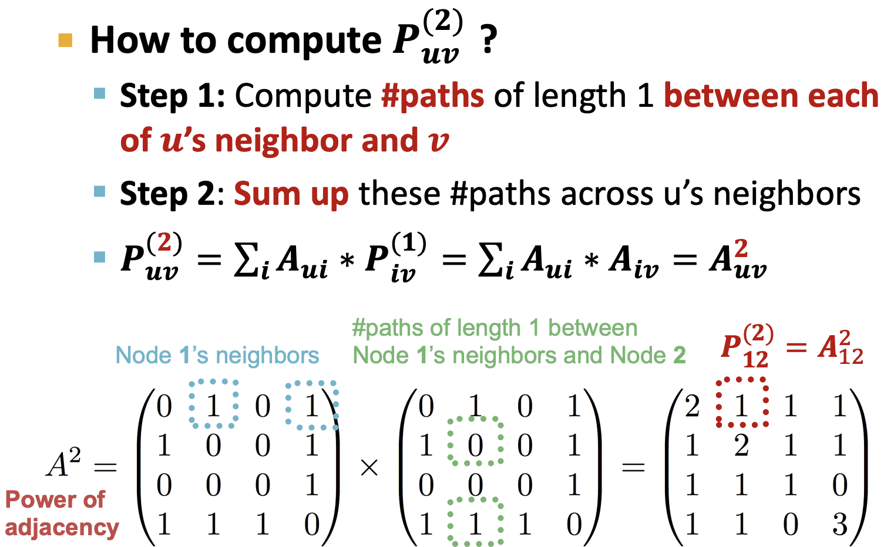
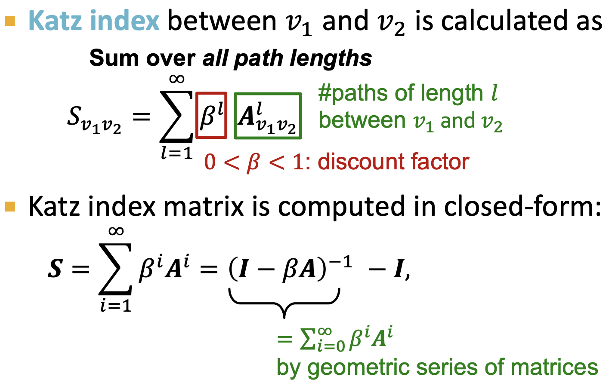
\(\tiny{\text{YouTube-Stanford-CS224W-Jure Leskovec}}\)
Graph-Level features and Graph Kernels¶
How to design graph level features
that characterizes structure of entire graph
Types
Kernel methods - measures similarity b/w data
Graph Kernels - measure similarity b/w graphs
Kernel method¶
widely used in ML for graph level prediction
key idea: design kernels instead of feature vectors
key idea
Kernel matrix K(G, G’)
positive semidefinite (i.e., positive eigen values)
symmetric matrix
represent kernel as a dot product of feature representation \(\phi(.)\) of each graphs \(K(G, G') = \phi(G)^{T}\phi(G')\)
once the kernel is defined, existing kernel methods such as kernel SVM can be used to make predictions
Graph kernels¶
measure similarity between two graphs
Graphlet Kernel
represented as Bag-of-graphlets
computationally expensive
Weisfeiler-Lehman (WL) Kernel
color enrichment hash
represented as Bag-of-colors
computationally efficient
closely related to GNN
others
random-walk kernel
shortest path graph kernel
key idea:
find/design a graph feature vector \(\phi(G)\)
Key Idea¶
Bag-of-Words (BoW) for a graph
use word count as features for documents
for every word, keep a count of how often it appears in document
order does not matter
consider nodes as words
problem is
for same number of nodes/words - graphs can have different structures
feature representation for two very different graph will be the same
following will have the same feature vector
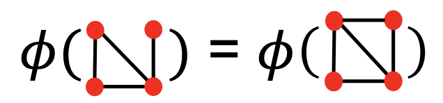
\(\tiny{\text{YouTube-Stanford-CS224W-Jure Leskovec}}\)
what if Bag of node degree is used?
different feature representation for different graphs
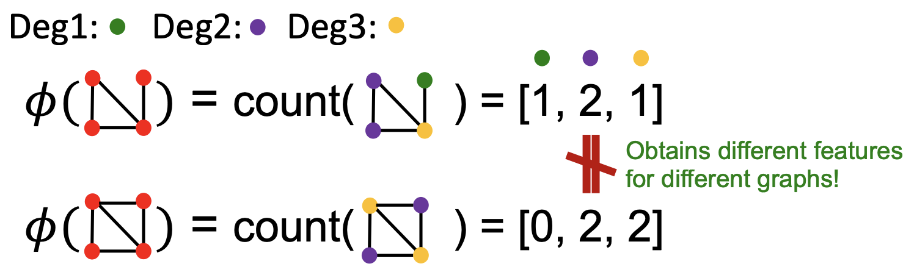
\(\tiny{\text{YouTube-Stanford-CS224W-Jure Leskovec}}\)
both Graphlet and Weisfeiler-Lehman (WL) Kernel uses sophisticated ways of representing this “bag”
Graphlet features¶
count the number of different graphlets
Graph graphlet is different from node-level graphlet features
list of graphlets of size k are calculated
in graph level
they dont need to be connected
isolated nodes are allowed
\(G_{k} = (g_{1}, g_{2}, ..., g_{n_{k}})\)
the graphlet count vector is calculated as
\((f_{G})_{i} = \#(g_{i} \subseteq G)\)
for i = 1,2,..\(n_{k}\)
\(f_{G} \in \mathbb R^{n_{k}}\)
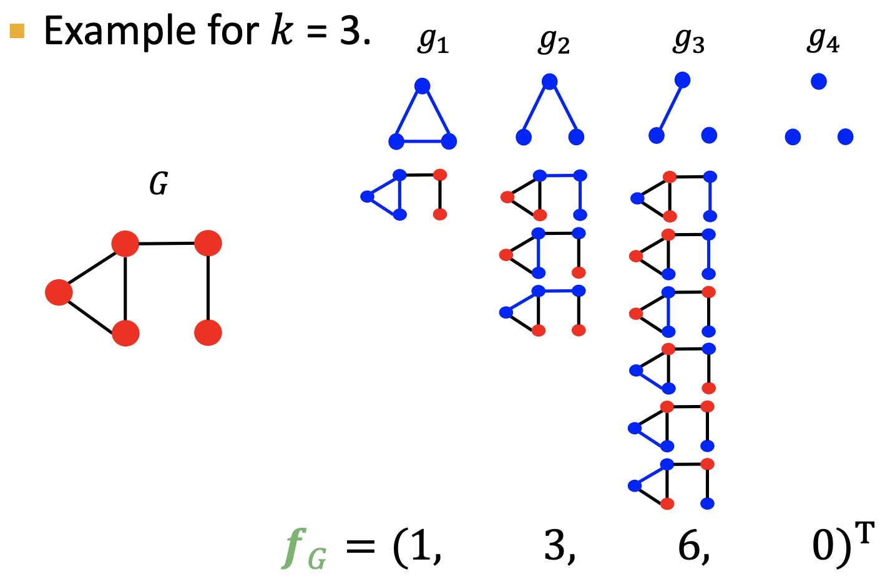
\(\tiny{\text{YouTube-Stanford-CS224W-Jure Leskovec}}\)
Graphlet kernel¶
dot product of graphlet count of two vector graphs $\( K(G, G') = f_{G}^{T}f_{G'} \)$
problem:
but this results in skewed value due to different size of G and G’
solution:
so normalize each feature vector
this normalizes size and density of underlying graph $\( h_{G} = \frac{f_{G}}{sum(f_{G})} = \frac{\text{number of individual graphlets}}{\text{total number of graphlets in graph}}\)\( \)\( K(G, G') = h_{G}^{T}h_{G'} \)$
limitations:
Counting graphlets is expensive
counting size k graphlets for graph of size n by enumeration has complexity of \(n^{k}\)
NP-hard in worst-case
Weisfeiler-Lehman(WL) Kernel¶
goal:
design efficient graph feature descriptor compared to Graphlet kernel
idea:
use neighborhood structure to iteratively enrich node vocabulary
generalize from one-hop neighborhood information to multi-hop neighborhood information
generalized version of Bag of node degrees
algorithm:
Weisfeiler-Lehman graph isomorphism test (color refinement test)
iteratively refine node colors using hash with different colors to different inputs $\( c^{(k+1)}(\nu) = hash(\{c^{(k)}(\nu),\{c^{(k)}(u)\}_{u \in N(\nu)}\}) \)$
steps:
assign initial color \(c^{(0)}(\nu)\) to each node
iteratively hash colors from neighbors to invent new colors
new color of given node \(c^{(k+1)}(\nu)\) will be hashed value of
its own color \(c^{(k)}(\nu)\) from previous step
concatenated with colors from the neighbors \(\{c^{(k)}(u)\}_{u \in N(\nu)}\}\)
after k steps of color refinement, \(c^{(k)}(\nu)\) summarizes structure of k-hop neighborhood
WL kernel value is computed by the inner product of color count vectors
computationally efficient
linear time complexity